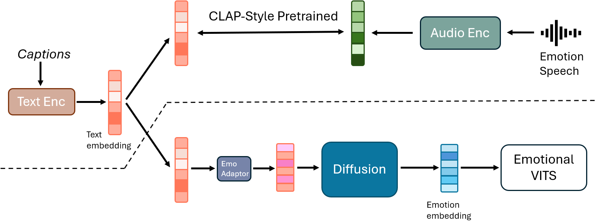
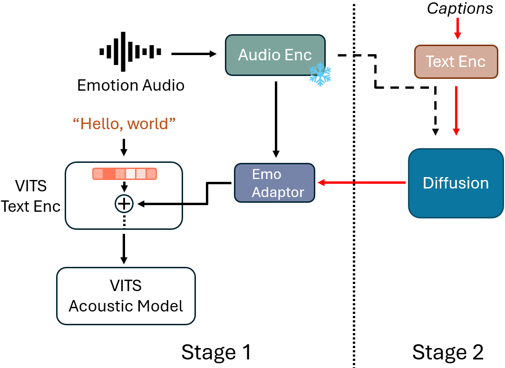

Improving the controllability of emotional text-to-speech using natural language guidance by Contrastive Learning & Diffusion
Anonymous submission to SLT 2024
Abstract
Flow-based emotional text-to-speech (TTS) models have exhibited great promise in producing high-fidelity emotional speech. However, an important aspect of emotional TTS is the controllability of the output. Current methods rely on emotional labels or reference speech to control the synthesized emotion.While these methods can produce samples that mimick a particular style or correspond to a specific label, they are still lacking in granularity. We introduce a text-based method which allows us to benefit from the ingrained compositionality of natural language. Specifically, we use the text encoder of ParaCLAP -- a recently introduced contrastive language-audio pretraining (CLAP) model for computational paralinguistics -- to condition a diffusion-based for a diverse emotion results. ParaCLAP is trained to closely associate text with paralinguistic attributes of speech. This enables us to control the generation process with an emphasis on attributes like pitch, jitter, and loudness. Our experiments show that this conditioning allows us to generate more diverse emotional speech without jeopardizing overall fidelity.
|  |  |
| A high-level overview of ParaEVITS. Above the dotted line is the training process of the ParaCLAP-NP, through which learn an aligned representations for emotion and captions. Below the dotted line is our emotional TTS generation process: a ParaCLAP-NP text embedding is first processdy by the diffusion prior to produce the a ParaCLAP emotion embedding, and then emo adaptor will map the emotion embedding into a smaller size, which will be used as the emotion input of the emotional VITS to synthesis a final waveform. | The two-stage training process for our system. Stage 1 involves training processing of eVITS. Stage 2 incorporates captioning through ParaCLAP-NP text encoder and diffusion models. The red lines indicate the inference phase, where the diffusion model utilizes captions to refine the emotional characteristics in the synthesized speech. |
TTS Samples
| No Caption | No Caption |
| speaker has a normal pitch and has a normal pitch variation and is loud and has a high equivalent sound level and has a low jitter and has a low shimmer and emotion is angry | speaker has a low pitch and has a normal pitch variation and is loud and has a high equivalent sound level and has a low jitter and has a low shimmer and emotion is angry |
| speaker has a high pitch and has a normal pitch variation and loudness is just about right and has a normal jitter and has a normal shimmer and emotion is happy | speaker has a normal pitch and has a high pitch variation and loudness is just about right and has a low jitter and has a normal shimmer and emotion is happy |
| speaker has a high pitch and has a normal pitch variation and is loud and has a normal jitter and has a normal shimmer and emotion is surprise | speaker has a high pitch and has a normal pitch variation and is loud and has a normal jitter and has a normal shimmer and emotion is surprise |
| speaker has a normal pitch and has a low pitch variation and is almost silent and has a low jitter and has a low shimmer and emotion is sad | speaker has a low pitch and has a low pitch variation and is loud and has a low jitter and has a low shimmer and emotion is sad |
| speaker has a normal pitch and has a normal pitch variation and is loud and has a high equivalent sound level and has a low jitter and has a low shimmer and emotion is angry | |
| speaker has a normal pitch and has a high pitch variation and loudness is just about right and has a low jitter and has a normal shimmer and emotion is happy | |
| speaker has a high pitch and has a normal pitch variation and loudness is just about right and has a normal jitter and has a normal shimmer and emotion is surprise | |
| speaker has a normal pitch and has a low pitch variation and is almost silent and has a low jitter and has a low shimmer and emotion is sad | |
| Emotion 1 | Rotation angle | Emotion 2 | ||||
| Angry | 0.1 | 0.2 | 0.3 | 0.4 | 0.5 | Surprise |